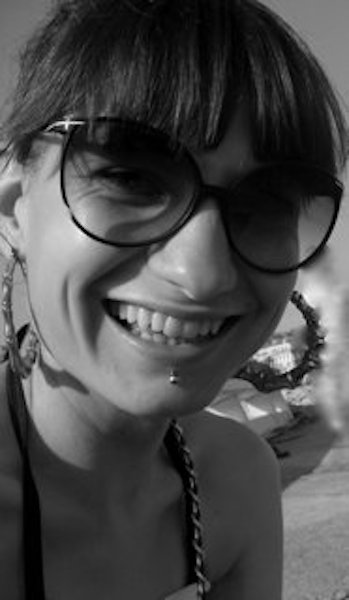

Junior FRONT END
developer
OM MIG
Webbutveckling är det roligaste jag gjort i mitt liv. Det ger mig en möjlighet att kombinera kreativitet, problemlösning och logiskt tänkande för att på bästa sätt skapa projekt som ser estetiskt vackra ut samt fungerar enkelt och användarvänligt. Jag brinner för tillgänglighet på webben, och anser det vara en viktig demokratifråga på vilket sätt vi ger tillgång till information som finns på nätet, för alla. Jag har en brokig historia bakom mig; mitt stora intresse var från början mode och textilbranschen, och jag tog en kandidatexamen i textilteknik vid Högskolan i Borås. Efter det startade jag eget företag inom textil produktutveckling, och här någonstans fann jag på underliga sidovägar till slut front end webbutveckling. Och det kändes som att jag hittat min grej; jag insåg att det är detta jag skall göra. Hösten 2021 började jag läsa Front End Webbutveckling på Grit Academy i Malmö, och inte en sekund har jag tvivlat på att det är rätt för mig.
PROJEKT
BHROMAON - PINK WEB DEV, 2020
Det här projektet skapades när jag läste en intensivkurs i Front End development, i regi av Pink Programming och Beetroot Academy. I det här projektet var syftet att jobba med positionering av objekt med hjälp av CSS. Projektet innehåller mycket bilder och andra objekt, och var det första stora projektet jag gjorde som en examination av den första halvan av kursen, under vilken vi jobbade med HTML och CSS.
MONTICELLO - PINK WEB DEV, 2020
Projektet Monticello var det sista stora projektet jag gjorde under kursen Pink Web Dev. Här fick jag använda alla mina samlade kunskaper från kursen, och även inkorporera JS som vi läste de sista veckorna. Jag använde bland annat slick-slider och scroll med JS, samt jQuery och Google Maps API. Jag använde mig även av CSS-förlängningen SASS i det här projektet.
FEJA PRODUCTS - GRIT ACADEMY, 2021
Ett av mina första projekt när jag började läsa vid Grit Academy. Feja är ett företag som jag grundat och driver tillsammans med en kompanjon. Jag byggde en prototyp på en webbshop efter egen design. Feja producerar och saluför återanvändbara rengöringsrondeller, tillverkade av lyocell istället för bomull.
SLUTPROJEKT JAVASCRIPT 1 - GRIT ACADEMY, 2021
Väderappen var slutprojekt i den första kursen Javascript vi hade hösten 2021. Projektet innebar att arbeta med ett API som hämtar väderdata och visa den på en webbsida. Mitt projekt ändrar bakgrund till en bakgrund från orten jag söker på, och utefter vilken tid på dygnet en gör sökningen; om jag söker väder i Malmö efter solnedgång, kommer bakgrunden av väderdatan att visa en kvällsbild från Malmö.

KONTAKT
Sara Majava
0733835974
sara.majava@gritacademy.se